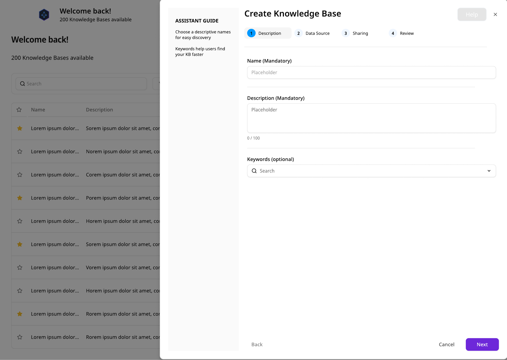
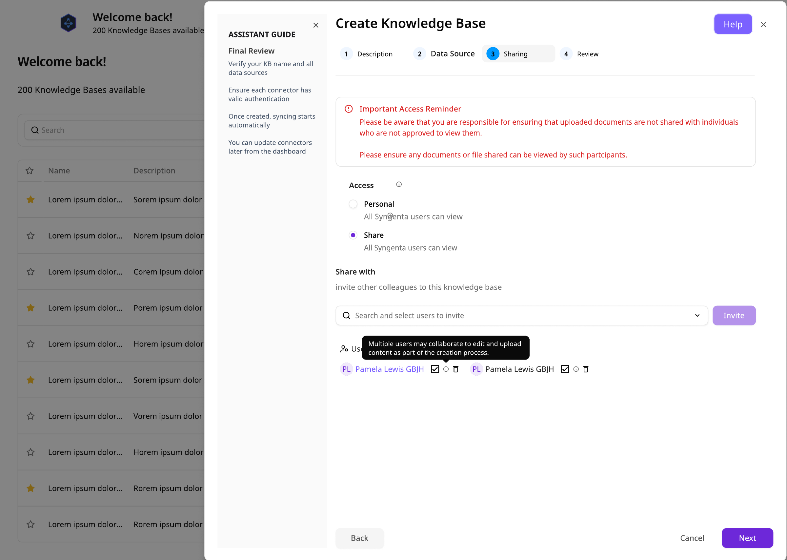
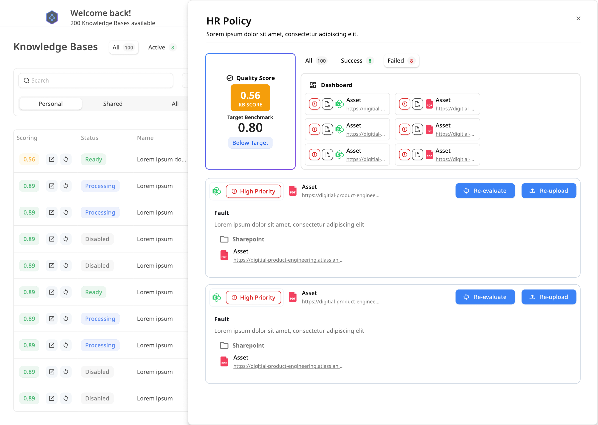
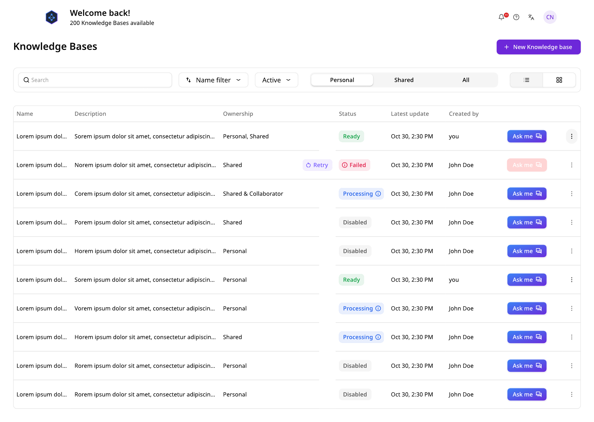

Overview
The AI Knowledge Hub turns knowledge into capability: upload or connect any set of sources — SharePoint sites, Confluence spaces, Amazon S3 buckets, or direct file uploads — and the platform builds a dedicated AI assistant grounded in exactly that content. Teams can spin up as many assistants as they have bodies of knowledge: an HR policy bot, a product spec bot, a compliance bot — each scoped to its own sources.
I designed the end-to-end experience: the creation wizard, source management, quality evaluation, sharing, and the notification loop that brings collaborators in.
Personas
The archetypes from the AI Foundry research programme carried directly into the Knowledge Hub — reframed around what people do with knowledge: those who own it, those who consume it, and those accountable for it.
domain practitioner · owns the source documents · team lead
newcomer to the platform · just wants trustworthy answers
platform admin · accountable for access and data flows
high AI maturity · runs several assistants across teams
A/B Testing
Key interaction patterns were tested as explicit alternatives with users before committing — the shipped design is the variant that won.
| Experiment | Variant A | Variant B | Outcome |
|---|---|---|---|
| Creation flow | Single configuration form | Four-step wizard with in-context assistant guide | B — non-technical owners completed setup unaided |
| Quality visibility | Health hidden in admin settings | Score vs. benchmark surfaced on the assistant itself | B — turned filing into an accountability loop |
| Sharing model | Share after creation, from settings | Access decided in-flow as step 3 | B — governance became part of the definition, not an afterthought |
| Collaboration loop | Email-only updates | In-product invitations & notification centre | B — ownership stopped being a bottleneck |
// design comparisons validated in moderated testing · quantitative split-testing planned post-release
Creation flow
Creating an assistant is a guided four-step flow, with a persistent assistant guide explaining each decision in plain language:


Quality
An assistant is only as good as its sources — so every knowledge base gets a quality score measured against a target benchmark. The evaluation page pinpoints exactly which assets are failing and why, flags high-priority faults, and offers one-click re-evaluate and re-upload actions to close the loop.

This reframes knowledge management from a filing exercise into an accountability loop: owners can see their assistant's health at a glance, and users can trust that a "Ready" assistant meets the benchmark.
AI Readiness
The quality score is built on a deeper piece of research: understanding why documents fail when they meet an AI. A document written for humans assumes a reader who sees the whole file, follows the links, and knows the context. Retrieval-augmented AI breaks every one of those assumptions — it retrieves chunks, in isolation, with no author on hand to explain.
Every document is evaluated against the five official KQS dimensions:
kqs_01
kqs_02
kqs_03
kqs_04
kqs_05
RAG Readiness
A dedicated check sits within the Clear and Relevant dimensions: the RAG self-containedness assessment. Corporate documents — policies, governance frameworks, procedural guides — lean heavily on cross-references and hyperlinks. Fine for a human navigating a document library; a real risk for a RAG system, which retrieves a chunk in isolation. The cross-referenced content simply isn't there, and the AI can produce incomplete or misleading answers without ever knowing it.
Every document is assessed on four explicit checks:
Findings feed directly into scoring — a graduated penalty ladder rather than a binary pass/fail:
| Finding | Impact on score |
|---|---|
| Largely self-contained; only optional supplementary references | No penalty |
| Cross-references for context, but enough inline information to stay useful | Minor — −0.5 on the affected dimension |
| Critical information routinely deferred with no inline summary | Significant — −1 to −2 on Clear and/or Relevant |
| Essentially an index pointing at other documents, no standalone content | Clear and Relevant scored 1–2 |
// every flagged issue ships with a specific mitigation in the recommendations — never a bare penalty
Metadata Model
A key insight from the knowledge-management workstream: not all metadata belongs inside the document. A central content register captures and manages most fields — so the evaluation deliberately distinguishes what lives where, and never penalises a document for register-managed fields.
category_a — content register
category_b — document-embedded
Why the split matters: when the RAG system retrieves a chunk, the register isn't there to vouch for it. The five Category B fields are the provenance and trust signals that travel with the content at inference time — so they must be visible in the document itself (header, footer, cover page or metadata table), and they gate the Accurate and Time-bound scores:
| Category B fields present | Impact on score |
|---|---|
| All five, clearly visible | No penalty |
| 3–4 present | Minor gap — −0.5, missing fields noted |
| 1–2 present | Significant gap — −1, flagged as High recommendation |
| None present | Major issue — −1 to −2, flagged as Critical |
Every evaluation output includes a provenance table, so owners see at a glance which trust signals their document carries:
| Field | Present in document? | Notes |
|---|---|---|
| Author | Yes | Found in footer |
| Owner | Partial | Team named, no accountable individual |
| Version | Yes | v2.3 on cover page |
| Creation date | No | Not visible |
| Last reviewed / modified | Yes | Metadata table, reviewed quarterly |
// example output — each document receives its own provenance table with per-field notes
Scoring Model
Each dimension is scored on a defined 0–5 scale — 5 Excellent (fully meets best practice), 4 Good (minor gaps), 3 Adequate (usable but inconsistent), 2 Weak, 1 Poor, 0 N/A (not reviewable from the supplied content) — then normalised to 0.00–1.00 (raw ÷ 5, two decimals). N/A dimensions are excluded and their weight redistributed proportionally, with the exclusion stated openly — never guessed.
The overall score is a weighted sum using the official KQS weights, deliberately weighted towards the two dimensions that most affect answer quality:
| Dimension | Weight | Rationale |
|---|---|---|
| Clear | 30% | Parseability decides what the LLM can extract from a chunk |
| Accurate | 30% | Wrong content confidently retrieved is the worst failure mode |
| Relevant | 15% | Content must answer real user questions, not describe abstractly |
| Time-bound | 15% | Provenance and recency signals gate user trust |
| Retrievable | 10% | Partly system-managed via the content register |
The weighted result maps to a plain-language readiness verdict, with 0.80 as the effective "RAG-ready" threshold:
| Overall KQS | Readiness verdict |
|---|---|
| 0.90 – 1.00 | Excellent — AI-ready; only minor or cosmetic edits |
| 0.80 – 0.89 | Good — RAG-ready; improvements nice-to-have, not blocking |
| 0.60 – 0.79 | Fair — usable with caution; improve before heavy reliance |
| 0.40 – 0.59 | Weak — not suitable as a primary RAG source yet |
| 0.00 – 0.39 | Poor — not suitable for RAG in current form |
Transparency was a design requirement, not a nicety: every score ships with its derivation in plain business language — "the document defers critical role definitions to an external HR policy with no inline summary, so Clear = 3/5 → 0.60, down from 4 due to cross-reference dependency" — so a non-technical owner understands exactly why, and exactly what to change.
Mitigations
Every cross-reference issue the evaluation flags is paired with one of five named mitigation strategies, matched to the severity and type of problem — each with copy-ready example edits the author can adapt directly:
mitigation_01
mitigation_02
mitigation_03
mitigation_04
mitigation_05
The evaluation itself lands as a structured, human-friendly report: a 3–5 bullet overview of strengths and RAG risks, the normalised score table against the 0.80 target, the provenance metadata check, an always-shown self-containedness flag (density and risk rated low / medium / high), dimension-by-dimension reasoning, and recommendations grouped Critical / High / Medium / Low — each with the issue, why it matters for RAG, what to do, example edits, and the expected KQS impact (e.g. +0.10 Time-bound, +0.03 Overall).
Collaboration
Knowledge bases are team assets. Sharing is built into the creation flow rather than bolted on, and an invitation and notification system keeps collaborators in the loop — from access invites to processing and evaluation updates — so ownership never becomes a bottleneck.
